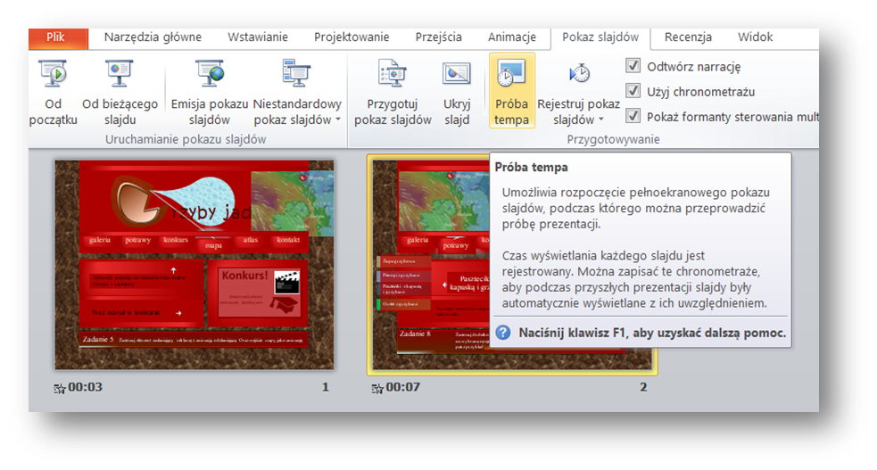
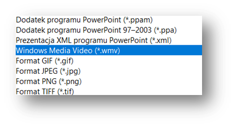

Jak to zrobiæ?
Wstawiamy film do samouczka
- 1. Stwórz samouczek w PowerPoincie
Po wstawieniu animacji, w "pokazie slajdów" - zapisz próbê tempa.

- 2. Zapisz plik jako *.wmv

- 3. Przekonwertuj plik zapisany w PowerPoincie na .mp4 (np. na stronie link)
- 4.Wstaw film do szablonu samouczka - polecam inspiracjê nr1 stworzony przez Darka (jsfiddle.net/kwu9rs6m/7)
lub
ciekawa inspiracja nr2
- 5. Wstaw video (wykorzystaj parametry: autoplay loop control) w3schools
Filmik stworzony równie¿ w programie PowerPoint